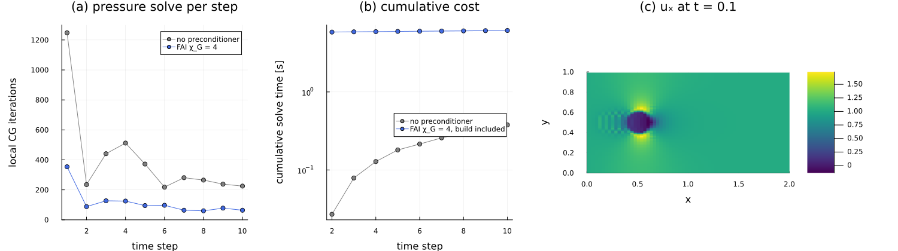

Channel flow past a cylinder
The Chorin projection advances an incompressible flow in two steps: an explicit predictor that ignores the pressure, and a pressure Poisson solve that projects the predicted velocity onto the divergence-free fields. The Poisson operator is the same at every time step, so a preconditioner can be built once and reused over the whole evolution. This is the setting of Sec. 5.2 of Torrente et al., Factorized approximate inverse preconditioners in the tensor train format ("the paper"), where the factorized approximate inverse (FAI) of the previous tutorials amortizes its build and speeds up the pressure solves of the QTT flow solver of Peddinti et al., Quantum-inspired framework for computational fluid dynamics (2024). The guiding idea of this tutorial is to reproduce that pipeline in miniature, and to see which of its costs dominate on a small grid.
We proceed as follows. We first set up the channel of Sec. 5.2, with a cylinder encoded by cross interpolation, and choose the time step from the CFL condition. We then wrap the pressure solver so that it can carry a preconditioner and record its work at every step, and run the same evolution with plain MALS and with MALS preconditioned by one reused FAI. Finally, we compare the iterations per step (Fig. 12 of the paper) and the cumulative solve time, including the build of the preconditioner (Fig. 13).
using DifferenTT
using ITensors, ITensorMPS
using TensorCrossInterpolation: crossinterpolate2, optfirstpivot
using LinearAlgebra
using Plots
using Printf
using Random
using StableRNGs
ITensors.disable_warn_order()The channel
The domain is the box $[0, 2] \times [0, 1]$, discretized on a non-interleaved QTT grid of $2^6 \times 2^6$ nodes, with the six sites of $x$ followed by the six sites of $y$. At the inlet $x = 0$ the velocity is $\mathbf{u} = (1, 0)$ and the pressure has a homogeneous Neumann condition; at the outlet $x = 2$ the velocity has homogeneous Neumann conditions and the pressure a Dirichlet condition with a constant value; all the fields are periodic in $y$.
The periodic axis is built with the periodic flag of Grid, taken from the boundary conditions by the non-exported periodic_axes: the 64 nodes of $y$ are spaced by $h_y = 1/64$ and the wrapped stencils have period 1. The numbers of this tutorial are not a reproduction of those of the paper, since they are computed on a much smaller grid.
nodes = (6, 6)
arch = QTTArchitecture(nodes; interleaved=false)
sites = siteinds(arch)
periodic = BoundaryCond1d(PeriodicBC(), PeriodicBC())
u_bcs = BoundaryConditions(BoundaryCond1d(DirichletBC(1.0), NeumannBC(0.0)), periodic)
v_bcs = BoundaryConditions(BoundaryCond1d(DirichletBC(0.0), NeumannBC(0.0)), periodic)
p_bcs = BoundaryConditions(BoundaryCond1d(NeumannBC(0.0), DirichletBC(1.0)), periodic)
grid = Grid(arch, (2.0, 1.0); periodic=DifferenTT.periodic_axes(p_bcs))
grid.dx(0.031746031746031744, 0.015625)The cylinder
A cylinder of radius 0.1 centered at $(0.5, 0.5)$ is immersed in the fluid by multiplying the velocity at every step by the smoothed indicator of Eq. (36),
\[\text{mask}(x, y) = \frac{1}{2}\left[1 + \tanh\left(700\left((x - 0.5)^2 + (y - 0.5)^2 - 0.1^2\right)\right)\right],\]
which is 1 in the fluid and 0 inside the cylinder. We encode it as an MPS by tensor cross interpolation (crossinterpolate2), which samples the function at the grid nodes, starting from the pivot of a seeded random search. Its bond dimension stays far below the $2^6 = 64$ of a generic function on this grid, and the interpolation error is at the level of rounding.
mask_function(x) = 0.5 * (1 + tanh(700 * ((x[1] - 0.5)^2 + (x[2] - 0.5)^2 - 0.1^2)))
pivot = optfirstpivot(Float64, mask_function, grid, arch; rng=StableRNG(1))
tci, ranks, errors = crossinterpolate2(
Float64, mask_function, grid, arch; initialpivots=[pivot], tolerance=1e-10, maxbonddim=50
)
mask = MPS(tci)
replace_siteinds!(mask, sites)
maxlinkdim(mask), last(errors)(17, 2.111727374703384e-13)The experiment and the time step
An INSExperiment holds the grid, the fields with their boundary conditions, the Reynolds number, the mask, the stencil order and the truncation of the TT arithmetic of the evolution. We use the paper's $Re = 3000$, the eighth-order stencils ($q = 8$) and the initial velocity $\mathbf{u}_0 = (\text{mask}, 0)$. On this grid the spacings are far above the Kolmogorov scale $Re^{-3/4} \approx 2.5 \cdot 10^{-3}$, of which the constructor warns: the flow is not resolved, and the run only serves to exercise the pipeline.
template = INSExperiment(
grid,
VectorField((copy(mask), zeros_mps(sites)), arch, (u_bcs, v_bcs)),
ScalarField(sites, arch, p_bcs),
3000,
mask;
stencil_order=8,
maxdim=64,
cutoff=1e-11,
);┌ Warning: Spacing in the 1-th dimension does not resolve to Kolmogorov scale dx = 0.031746031746031744 > Re^-(3/4) = 0.002466942681640951
└ @ DifferenTT ~/work/DifferenTT.jl/DifferenTT.jl/src/Physics/NavierStokes/insexperiment.jl:266
┌ Warning: Spacing in the 2-th dimension does not resolve to Kolmogorov scale dx = 0.015625 > Re^-(3/4) = 0.002466942681640951
└ @ DifferenTT ~/work/DifferenTT.jl/DifferenTT.jl/src/Physics/NavierStokes/insexperiment.jl:266The pressure has a Dirichlet side, so its Poisson operator is not singular and needs no regularization: regularization_check is false. The first known limitation of the Chorin projection of v0.1, the mean removal of a singular system (see INSExperiment), is therefore inactive here. The second one is not: the projection $\mathbf{u} = \mathbf{u}^* - dt\, \nabla p$ also changes the rows next to the Dirichlet velocity faces, which in this setup are those of the inlet.
DifferenTT.regularization_check(template)falseThe predictor is integrated with the fourth-order Runge–Kutta scheme (RK4). For an explicit scheme, the time step must keep $dt\,\lambda$ inside the stability region for every eigenvalue $\lambda$ of the linearized right-hand side. The central advection has imaginary eigenvalues, bounded by $\lambda_{\text{adv}}$, and the diffusion negative real ones, bounded by $\lambda_{\text{diff}}$ (cfl_spectral_radii); the stability region of RK4 reaches $2\sqrt{2}$ on the imaginary axis and $2.785$ on the negative real one, which gives the rule of check_cfl,
\[dt \le \frac{2\sqrt{2}}{\lambda_{\text{adv}}}, \qquad dt \le \frac{2.785}{\lambda_{\text{diff}}}.\]
λ_adv, λ_diff = DifferenTT.cfl_spectral_radii(template)
@printf(
"λ_adv = %.1f, λ_diff = %.1f: dt ≤ %.4f (advection), dt ≤ %.3f (diffusion)\n",
λ_adv,
λ_diff,
2√2 / λ_adv,
2.785 / λ_diff
)λ_adv = 199.0, λ_diff = 11.0: dt ≤ 0.0142 (advection), dt ≤ 0.253 (diffusion)The advection limits the step to about 0.014, and we take $dt = 0.01$ and 10 steps. The paper uses $dt = 10^{-3}$ and 500 steps on a $2^8 \times 2^8$ grid, whose spacing is four times smaller.
dt, nsteps = 0.01, 10
stepper = RK4(; time_evol_kwargs=TimeEvolArgs(0.0, dt * nsteps, nsteps), cutoff=1e-11, maxdim=64)RK4{@NamedTuple{cutoff::Float64, maxdim::Int64}}(TimeEvolArgs(0.0, 0.1, 0.01, 10), (cutoff = 1.0e-11, maxdim = 64))A pressure solver that records its work
chorin_evolve! advances the experiment with chorin_step, which solves the pressure system with the solver it is given, starting from the pressure of the previous step, by calling linearsolve without a preconditioner. In order to pass a preconditioner, and to record the iterations and the time of every pressure solve, we define a small solver type of our own. It is an AbstractLinearSolver whose linearsolve method calls the preconditioned method of a ResidualALS (MALS), and reads the local CG iterations from a KrylovSweepStats. The solver follows Sec. 5.2: sweeps stopped at a relative residual of $10^{-3}$, no singular value cutoff, and local CG to a relative tolerance of $10^{-4}$, with at most 2000 iterations.
struct RecordedSolver{P} <: AbstractLinearSolver
mals::ResidualALS
preconditioner::P
numiter::KrylovSweepStats
iterations::Vector{Float64}
times::Vector{Float64}
end
function RecordedSolver(preconditioner)
numiter = KrylovSweepStats()
mals = ResidualALS(;
sweep_kwargs=SweepingArgs(; nsweeps=100, maxdim=64, cutoff=0.0, (observer!)=ResidualObserver(; rtol=1e-3)),
updater_kwargs=LocalUpdaterArgs(;
ishermitian=true, isposdef=true, rtol=1e-4, krylovdim=1, maxiter=2000, numiter_store=numiter
),
residual_tol=0.5e-3,
)
return RecordedSolver(mals, preconditioner, numiter, Float64[], Float64[])
end
total_iterations(numiter) = sum(DifferenTT.positions_sum(numiter); init=0.0)
function DifferenTT.linearsolve(solver::RecordedSolver, A::MPO, b::MPS, x0; kwargs...)
before = total_iterations(solver.numiter)
elapsed = @elapsed x = if isnothing(solver.preconditioner)
linearsolve(solver.mals, A, b, x0; kwargs...)
else
linearsolve(solver.mals, A, b, solver.preconditioner, x0; kwargs...)
end
push!(solver.iterations, total_iterations(solver.numiter) - before)
push!(solver.times, elapsed)
return x
endThe evolution without preconditioner
We run the evolution on a copy of the experiment. With save_every = nsteps, chorin_evolve! stores the initial state and that of the last step; in general it stores the steps save_every, 2 save_every, … and the last one. Note that, as explained in chorin_step, each step projects the velocity it receives and then predicts, so the stored velocity is the provisional field $\mathbf{u}^*$ of the next step, which is not projected. The first pressure solve starts from the zero MPS, and every later one from the pressure of the previous step.
The predictor evaluates the advection with element-wise products of tensor trains (tt_mul), computed by RSI with random sketches. The experiment draws them from the global random number generator, which it does not let us replace, so we seed that generator before each run; both runs then draw the same sketches.
baseline = RecordedSolver(nothing)
baseline_run = deepcopy(template)
Random.seed!(1)
baseline_time = @elapsed chorin_evolve!(baseline_run, baseline, stepper, nsteps)
println("iterations per step: ", Int.(baseline.iterations))┌ Info: CFL condition satisfied
│ dt = 0.01
└ dt_max = 0.014216178218619592
iterations per step: [1248, 235, 441, 512, 372, 218, 281, 265, 238, 225]The first solve, from zero, needs several times the iterations of the following ones, which start from the previous pressure. The pressure solves of steps 2 to 10 take a few hundredths of a second each; the first one, and most of the time of this first evolution, go to the compilation of the code.
@printf(
"evolution %.1f s, pressure solves %.2f s, of which steps 2 to %d: %.2f s\n",
baseline_time,
sum(baseline.times),
nsteps,
sum(baseline.times[2:end])
)evolution 18.1 s, pressure solves 0.75 s, of which steps 2 to 10: 0.38 sOne FAI for the whole evolution
The pressure operator of the experiment is the field poisson_op of its ChorinCache: $A = -W\Delta$, with the Neumann rows weighted by $W$ so that $A$ is SPD. It does not depend on the velocity or on the mask, so we build its FAI once, with the settings of Table 2 of the paper: $\mu = 10^7$, at most 30 MALS sweeps at a local tolerance of $10^{-8}$, stopped at a residual of $10^{-1}$ of Eq. (22), and $\chi_{G_L} = 4$.
A = ChorinCache(template).poisson_op
fai_build = ResidualALS(;
sweep_kwargs=SweepingArgs(; nsweeps=30, maxdim=4, cutoff=0.0),
updater_kwargs=LocalUpdaterArgs(; ishermitian=true, isposdef=true, rtol=1e-8, krylovdim=1, maxiter=3000),
residual_tol=1e-9,
)
build_time = @elapsed fai = fai_preconditioner(
A; μ=1e7, solver=fai_build, totalmaxdim=4, residual_tol=0.1, rng=StableRNG(2)
)
@printf("χ_A = %d, χ_G = %d, build %.1f s\n", maxlinkdim(A), maxlinkdim(fai.operator), build_time)χ_A = 6, χ_G = 4, build 5.8 sWe then repeat the same evolution with the preconditioned solver:
preconditioned = RecordedSolver(fai)
preconditioned_run = deepcopy(template)
Random.seed!(1)
preconditioned_time = @elapsed chorin_evolve!(preconditioned_run, preconditioned, stepper, nsteps)
println("iterations per step: ", Int.(preconditioned.iterations))
@printf("evolution %.1f s, pressure solves %.2f s\n", preconditioned_time, sum(preconditioned.times))┌ Info: CFL condition satisfied
│ dt = 0.01
└ dt_max = 0.014216178218619592
iterations per step: [354, 88, 127, 125, 95, 97, 64, 60, 78, 64]
evolution 16.1 s, pressure solves 0.43 sThe FAI reduces the local CG iterations of every pressure solve by a factor of three to four. This second evolution runs with the code already compiled, and shows where the time goes: a step takes about a second, almost all of it in the predictor, whose RK4 stages evaluate the advection by element-wise products of tensor trains, while the pressure solves take a few hundredths of a second. Both runs give the same flow up to the tolerance of the pressure solves:
u_baseline, u_preconditioned = last(baseline_run.u_fields)[1], last(preconditioned_run.u_fields)[1]
@printf(
"‖uₓ(FAI) - uₓ(no preconditioner)‖ / ‖uₓ‖ = %.1e\n",
norm(+(u_preconditioned, -u_baseline; alg="directsum")) / norm(u_baseline)
)‖uₓ(FAI) - uₓ(no preconditioner)‖ / ‖uₓ‖ = 1.7e-05Cumulative cost
Fig. 13 of the paper measures the cumulative speedup up to each step, as the ratio between the time of the plain pressure solves and that of the preconditioned ones plus the build of the FAI. We compute it from step 2 on, since the first solve of each run includes the compilation of the code.
cumulative_baseline = cumsum(baseline.times[2:end])
cumulative_fai = build_time .+ cumsum(preconditioned.times[2:end])
@printf(
"solve time per step: %.3f s without, %.3f s with the FAI; cumulative speedup after %d steps: %.3f\n",
sum(baseline.times[2:end]) / (nsteps - 1),
sum(preconditioned.times[2:end]) / (nsteps - 1),
nsteps,
cumulative_baseline[end] / cumulative_fai[end]
)solve time per step: 0.042 s without, 0.035 s with the FAI; cumulative speedup after 10 steps: 0.062On this grid the FAI does not pay off. A pressure solve takes a few hundredths of a second, so the iterations it saves hardly show in the solve time: each preconditioned iteration costs $1 + 2\chi_{G_L}/\chi_A = 1 + 8/6 \approx 2.3$ plain ones (Sec. 4), and the fixed costs of the sweeps, such as updating the projected environments, weigh as much as the iterations themselves. The build, on the other hand, costs as much as hundreds of solves, and is never amortized in a run of this length. The paper reaches a net speedup only on finer grids, where the condition number of the pressure operator, which grows as $\mathcal{O}(h^{-2})$, makes every solve expensive: on the $2^{10} \times 2^{10}$ grid of Sec. 5.2, an FAI with $\chi_{G_L}$ between 4 and 5 gives a cumulative speedup of 1.31 to 1.34 after 1000 steps, build included, while on the $2^8 \times 2^8$ grid the advantage is already diluted by the fixed costs.
Summary
The figure shows (a) the local CG iterations of the pressure solve at each step, a miniature of Fig. 12 of the paper, (b) the cumulative time of the pressure solves from step 2 on, with the build of the FAI included, and (c) the horizontal velocity of the last stored state of the preconditioned run, a provisional field $\mathbf{u}^*$. The flow is not resolved on this grid, which shows as node-to-node oscillations upstream of the cylinder. The velocity is sampled on the grid (contract_mps orders the nodes with $x$ as the most significant index, so the reshaped array has $y$ along its rows).
panel_a = plot(;
xlabel="time step",
ylabel="local CG iterations",
title="(a) pressure solve per step",
ylims=(0, 1300),
legend=:topright,
)
plot!(panel_a, 1:nsteps, baseline.iterations; label="no preconditioner", marker=:circle, color=:gray)
plot!(panel_a, 1:nsteps, preconditioned.iterations; label="FAI χ_G = 4", marker=:circle, color=:royalblue)
panel_b = plot(;
xlabel="time step", ylabel="cumulative solve time [s]", title="(b) cumulative cost", yscale=:log10, legend=:right
)
plot!(panel_b, 2:nsteps, cumulative_baseline; label="no preconditioner", marker=:circle, color=:gray)
plot!(panel_b, 2:nsteps, cumulative_fai; label="FAI χ_G = 4, build included", marker=:circle, color=:royalblue)
x_nodes, y_nodes = grid.points
panel_c = heatmap(
x_nodes,
y_nodes,
reshape(contract_mps(u_preconditioned), reverse(2 .^ nodes)...);
aspect_ratio=:equal,
xlims=(0, 2),
ylims=(0, 1),
xlabel="x",
ylabel="y",
title="(c) uₓ at t = $(dt * nsteps)",
color=:viridis,
)
plot(
panel_a,
panel_b,
panel_c;
layout=Plots.grid(1, 3; widths=[0.28, 0.28, 0.44]),
size=(1500, 420),
margin=6Plots.mm,
left_margin=10Plots.mm,
)